A specification for the next version of custode, written from the UI backwards. The interface work surfaced two structural problems — the wrong primary noun, and no notion of what needs a human — and both are cheaper to fix in the domain model than in a template. This document defines the vocabulary, the attention resolver, the operation registry, the provider contract for multiple agent CLIs, and a build order.
The current system grew organically and works. What it can’t do is answer “what needs me?” without you reading sixteen tiles, and it can’t represent more than one agent per repository. Both limitations sit in the schema, not the view.
What carries forward unchanged: the Claude CLI wrapper, the Codex CLI wrapper, the Oban cron plumbing, the sensor/journal mechanics, the advisor concept, and the workspace/worktree management. Those are the hard-won parts. What changes is the layer above them — the vocabulary they speak and the way work is addressed.
Not “spec the whole API layer, then build” — that commits a lot of surface before the seam is proven. Nouns first, because operations fall out of nouns almost mechanically and thirty operations written against the old nouns get rewritten. Then the attention resolver, because it is the genuinely new product logic. Then one vertical slice end to end before the registry is filled in.
| # | Phase | Done when |
|---|---|---|
| 1 | Nouns | Section 2 of this document is agreed and the Ecto schemas match it. No behaviour yet. |
| 2 | Attention resolver | A pure module with a test per signal kind, running against production data and producing a defensible ranking of the real fleet. |
| 3 | One vertical slice | ask_human → answer works from LiveView and from an MCP client, with one audit row per call. Proves the seam. |
| 4 | Provider contract | Claude and Codex both return a %Turn{}; the roster picks provider per crew member; nothing above the provider knows which ran. |
| 5 | Registry fill-in | The rest of section 6, plus schema-generated forms. New operations appear in the UI without new templates. |
| 6 | Fleet UI | Section 8’s screens, migrated mission by mission with the old UI still running. |
| 7 | Reference implementation | A second, independent implementation of the worker contract in Rust over tower-mcp. Done when its client can drive this server and its server passes the same conformance ladder — see section 5. |
The fleet UI is last deliberately. Every screen in section 8 is a projection of the resolver; built before it, they encode the ranking logic in templates, which is exactly the trap the current version fell into.
Nine nouns. Everything in the system is one of these, and the UI, the operation names, and the MCP tool names all use these words — no synonyms, no internal-only terms leaking into either surface.
| Noun | Definition | Identity |
|---|---|---|
| mission | A durable thing being kept in check. Usually a repository; also a watch (USGS), a domain (“world”), or anything with a stable name and an owner. The primary unit of the UI and of budget. | slug — mdbook-lint |
| crew member | An agent serving on exactly one mission. Persistent or ephemeral. Has a role, a trigger, a provider, a model, and a share of the mission rail. Addressable, not separately navigable. | handle scoped to mission — mdbook-lint/@lead |
| role | What a crew member is allowed and expected to do: lead, triage, reviewer, releaser, watcher, analyst, alerter, worker. Determines default scopes and prompt shape. | enum |
| turn | One execution of one crew member by one provider. The unit of cost, tokens, transcript, and outcome. The provider boundary (section 4). | uuid |
| item | A thing worked on: issue, pull request, gate, todo, journal entry, external event. The third level of drill-down. | typed tuple — {:pr, 400} |
| signal | Derived. The single current state of a mission or crew member, with a human reason and the operations that would resolve it. Never persisted as truth. Section 3. | computed |
| operation | A named, schema‑described, scope‑guarded, audited mutation or query. The only way anything changes. Section 6. | atom — :"roster.hire" |
| actor | Who ran an operation: you, custode itself, a crew member, or an external client. Recorded on every call; rendered in every log. | tagged tuple |
| grant | A set of scopes issued to an actor, revocable, with a live session view. Covers MCP clients, crew members, and future human teammates with one mechanism. | uuid + token |
The word “agent” is retired from the interface. It currently means three things: the mission, the crew member, and the worker process. Splitting it is most of the clarity win, and keeping it around as a fourth synonym undoes that.
It is root: an actor with universal scope that can configure any mission, hire or retire any crew member, change any schedule, address any agent, and act on your behalf. Today it appears in the fleet grid as a peer tile reading offline, $0.00, which understates it and looks like a fault. It should be the frame the fleet sits in — a persistent command surface reachable from every page, with its own audit trail of what it did while you were away.
The genagent/custode repository is a separate thing and is a mission, with its own crew, like any other repo. The name collision is worth resolving: suggest the root actor stays custode and the repo mission is custode-dev, as it is today.
A spawned worker is an ordinary crew member with three extra fields: spawned_by, scope_note (what it was created to do, in one sentence, shown in the UI), and expires_at. It appears in the crew strip while alive with a lifespan bar, and on retirement it folds into the mission log rather than lingering as roster litter. Only roles with roster:spawn can create one — by default just @lead.
Repository work is the target, and it must not be the vocabulary. The mechanism this system provides is four verbs — prompt, observe, adjust, schedule — and everything domain-specific is stochastic and lives in prose. The core names no backend (section 4) and, by the same discipline, no domain.
The quakes mission is the standing test, not a curiosity. It has no repository, no diff, no checks, no pull requests and no working directory — only a feed, a journal and a threshold. Any vocabulary, screen, or schema that cannot express it has let repository shape leak into the core. Keep it in the fixtures permanently for exactly that reason.
Three rules follow, and the first is a correction: an earlier draft of the grant vocabulary read repo:read, checks:read, diff. That is git shape in the permission names, which makes every non-repository mission second-class the moment someone reads the documentation.
| Grant class | On a repository mission | On a watch mission |
|---|---|---|
| read | issues, pull requests, diffs, check results | the journal, prior findings |
| write | branches, commits, comments, labels | journal entries |
| publish | merge, release, tag — the outside world sees it | raise an alert to a channel or pager |
| fetch | clone, pull, fetch CI logs | poll the USGS feed |
| ask | identical in both — raise a question to the operator. The one grant no mission should be without. | |
The most valuable new module, and the one that does not exist today. A pure function from stored state to a single ranked signal. It has no side effects, no database writes, and no opinion about presentation — which means it is trivially testable against real fleet data and every screen can be a projection of it.
Two of these signals already exist. ObanClaude.Agent.Instance routes structured-output directives into states: ask_user → :waiting_for_user and request_permission → :awaiting_permission. So needs_answer and approval are not new machinery — the resolver reads gen_statem state that is already there. What custode adds is durability, ranking, and a human surface, which is exactly the split oban_claude draws for itself (see section 4).
defmodule Custode.Attention do
@spec resolve(Mission.t(), context :: map()) :: Signal.t()
@spec resolve_crew(CrewMember.t(), context :: map()) :: Signal.t()
@spec rank([Signal.t()]) :: [Signal.t()]
end
%Custode.Signal{
subject: {:mission, "mdbook-lint"},
raised_by: {:crew, "@lead"}, # who surfaced it, for attribution
kind: :red_check,
urgency: :high,
headline: "1 red check blocking #400",
detail: "Agent classified this PR as yours, so it stopped rather than guessing.",
item: {:pr, 400},
raised_at: ~U[2026-07-23 14:02:11Z],
resolving: [
%Op{label: "Open #400", op: :"github.open", args: %{pr: 400}},
%Op{label: "Re-run checks", op: :"github.rerun_checks", args: %{pr: 400}},
%Op{label: "Hand to agent", op: :"conversation.message", args: %{to: "@lead"}}
]
}
The resolving list is what makes rows actionable without bespoke templates — the UI renders buttons from it.
First match wins. A mission with both a red check and an open question resolves to the question, because a question is blocked on a human by definition whereas a red check may still be the agent’s to fix.
| Kind | Condition | Group | |
|---|---|---|---|
| 1 | needs_answer | A crew member called ask_human and no answer has been recorded. | needs you |
| 2 | approval | A gate is open that only you can pass — merge, release, destructive change. | needs you |
| 3 | red_check | A failing check the crew has declared not theirs, or has failed to clear in n attempts. | needs you |
| 4 | rail_hit | Budget rail reached while work was still landing — the rail is interrupting production, not runaway spend. | needs you |
| 5 | stalled | Scheduled, running, and producing no outcome across n consecutive sweeps. The failure mode with no current visibility at all. | needs you |
| 6 | working | A turn is executing right now. | working |
| 7 | scheduled | Healthy, has queued work, next beat known. | scheduled |
| 8 | quiet | Healthy, nothing found in window, nothing queued. Collapses to a name in the UI. | quiet |
| 9 | paused | Deliberately stopped, by you or by custode. Never shown as a problem. | quiet |
A mission’s signal is the highest-precedence signal among its crew, carrying raised_by so the UI can say “@analyst asked you a question” without you having needed to know the crew existed. Within a group, order by urgency then raised_at ascending — oldest unanswered first, because staleness is the thing you want to feel.
Open question worth resolving early. Recency is currently the only sort, and it will remain a good tiebreaker, but it must not be a group. Something quiet for three weeks that suddenly needs you should jump the queue.
Second open question. Whether stalled can be detected reliably enough to show. A false stall is worse than no stall detection, because it trains you to distrust the needs-you group — which is the whole value of the redesign. Suggest shipping it behind a threshold you can tune, and off by default.
The useful boundary is a turn, not a CLI. Both existing wrappers already produce that shape; naming it makes provider a per-crew-member configuration field rather than a fork in the codebase. Nothing above the provider learns which binary ran, so the UI, the resolver, the budget rails and the audit log are all provider-agnostic for free.
defmodule Custode.Provider do
@callback run(Prompt.t(), opts :: keyword()) :: {:ok, Turn.t()} | {:error, term()}
@callback resume(session_id :: String.t(), Prompt.t(), opts) :: {:ok, Turn.t()} | {:error, term()}
@callback cancel(session_id :: String.t()) :: :ok | {:error, term()}
@callback capabilities() :: %{
models: [String.t()],
sessions?: boolean(), # can a turn be resumed
tools?: boolean(), # can it call MCP tools itself
cost_reported?: boolean() # does it report spend, or do we estimate
}
end
%Custode.Turn{
id:, mission:, crew_member:,
provider: :claude | :codex,
model: "sonnet",
started_at:, ended_at:,
input_tokens:, output_tokens:, cost_usd:,
tool_calls: [%ToolCall{name:, args:, result_summary:}],
transcript: {:file, "…/turns/b62c04e1.jsonl"},
outcome: :ok | :failed | :rail_stop | :cancelled | :needs_answer,
emitted: [%Signal{} | %JournalEntry{} | %Todo{}]
}
Oban workers become provider-agnostic: enqueue a crew member, resolve its provider from the roster, dispatch.
Most of the turn machinery is already built and published, and it draws its own boundary in the right place. claude_wrapper gives a typed %Result{} / %Error{} from a headless claude -p call; oban_claude maps that onto Oban verdicts and, in its opt-in agent layer, runs each long-lived agent as a :gen_statem whose turns are ordinary jobs. Its README is explicit that it owns lifecycle, not operations — durable spend ledgers, persisted notebooks, gate records that survive restarts, notifications, dashboards and MCP surfaces are left to the application. That list is precisely custode.
| Already exists | What custode adds on top |
|---|---|
| %Result{} / %Error{} session_id, cost_usd | Persist as %Turn{}. The struct in this section is a durable projection of these two plus the run telemetry — not a new abstraction. |
| Agent.Instance :gen_statem, directives | Crew identity and roles; gate records that outlive the process; the attention resolver reading its states rather than duplicating them. |
| Agent.Tick Cron → self-restarting routine | roster.set_schedule writes through to the crontab entry; the UI shows the next beat. |
| args / pinned_args pinned > job > defaults | This is the mission-rules panel in FIG 2. Mission-invariant settings (merge needs a human, only @lead may spawn, budget ceiling) are pinned_args a crew member cannot escalate; role defaults are args. |
| json_schema propose / dispose | How narrow roles work: @triage and @reviewer run read-only and propose a typed verdict; an effector op disposes of it. Role scopes and structured output are the same idea at two layers. |
| run telemetry :stop and :exception | The spend ledger behind rails and FIG 2’s yield panel. Sum cost across both events — a rail-stop is an :exception that still spent money, so a ledger built on :stop alone under-reports exactly the runs you care most about. |
| worktree isolation | Named worktrees are how an ephemeral crew member shares a checkout with the @lead that spawned it. Killed runs leak checkouts, so worktree hygiene is a mission-level concern the UI should be able to show. |
Codex needs the mirror image. oban_claude hardcodes the claude_wrapper contract deliberately — the passthrough keys, the permission/hermetic vocabularies, the error kinds — so it is not the place to add a second CLI. The clean shape is a sibling adapter over the Codex wrapper, and Custode.Provider as the only thing that knows both exist.
Version pinning is a fleet concern. claude_wrapper has shipped breaking changes in 0.x minors, and a CLI upgrade underneath can change behaviour without a deploy — which is what the existing codex_wrapper_ex mission’s CLI contract check already watches for. Surface provider and CLI versions per mission, and treat doctor as a first-class fleet pre-flight rather than a shell command.
A separate specification defines the layer beneath this one: a backend-agnostic contract for exposing agentic work over MCP, where all capability composes from a single prompt atom and the surrounding nouns — agents as profiles, sessions, triggers, runs, gates, channels, budgets, a feed — are fixed once as a normative vocabulary. It settles most of what section 2 was reaching for, and it makes three of this document’s choices wrong.
The recommendation: custode is an Agent Worker MCP server, not a client of one. Its providers sit behind that contract’s backend seam and its MCP surface is that contract plus a management namespace. This is what makes section 6’s claim literal rather than aspirational: LiveView and an external client are peers because they are peers of the same declared surface, with no second private API behind it.
Two planes, and keeping them distinct dissolves an apparent contradiction. The contract insists on one operation; this document lists twenty. The work plane is the single prompt atom that every trigger invokes — custode adds nothing there and must not. The management plane is roster.*, budget.*, grant.*: the data manipulation the contract says agents are while deliberately naming no tools for it. That gap is exactly section 6.
| Worker contract | This document | Reconciliation |
|---|---|---|
| Worker / Server | the custode deployment | One MCP endpoint. Custode is the worker, not a client of one. |
| Agent (profile) | crew member | The same noun: a named profile of defaults, base prompt, subscriptions, schedule, budget. Section 2’s definition is this plus a role. |
| — no equivalent | mission | Custode’s one real addition. The contract has no grouping noun above the agent, so a repo with four crew has no name. Mission is that name, the budget scope, and the UI’s unit. |
| Instance | live occurrence | Whether an ephemeral worker is a short-lived Agent or an Instance with a lifespan is genuinely unresolved — section 10. |
| Backend | provider | The backend seam is Custode.Provider. Claude and Codex become two registered backends; adopt the descriptor shape rather than my ad-hoc capabilities/0. |
| Run | turn | Same record. Adopt its status set verbatim — mine is wrong (below). |
| Session | session | Unchanged, and stricter than I wrote it: server-minted, backend-tagged, one in-flight turn per session, cross-backend resume refused. Take as given. |
| Trigger | trigger | invoke | schedule | message | gate_resume. Adopt verbatim; do not mint a fleet-specific set. |
| Channel / Post | handoffs | The crew bus in FIG 2 is this: named channels, directed to, reply_to threading, depth and fan-out bounds. Already a contract. |
| Feed + operator peer | inbox | The inbox is not an invention. The operator is a peer on the bus; the inbox is that principal’s view of it — directed posts and open asks — filtered out of the full feed. |
| Budget | rail | Scopes are agent / session / instance / worker. Mission is a fifth scope custode contributes, between agent and worker. |
| Gate | approval | A blocking mid-turn hold. Distinct from an ask — see correction 2. |
| ask post kind | needs_answer | A non-blocking open question. This is the quakes case, and it is not a gate. |
| Environment | workspace | cwd, allowed root, isolation class. Section 4’s worktree hygiene concern lives here. |
1. Section 4’s turn outcome enum is wrong. Adopt the run statuses verbatim: queued · running · gated · succeeded · failed · cancelled · refused. My :rail_stop splits in two — a budget refusal at admission is refused, a breach mid-turn is failed — and :needs_answer is not an outcome at all. Inventing a parallel status set breaks the one rule that makes a shared vocabulary worth having.
2. A question and an approval are different mechanisms — and I had the question’s wrong. An approval is a gate: the turn blocks at gated with an attached input request, and answering resumes that same run. A question is not a gate at all: it is a post of kind ask addressed to: operator, which leaves the run succeeded and stays open on the bus until a reply_to closes it. The quakes case is the second kind, and the screenshot proves it — “no action needed unless you want closer monitoring; I’ll keep watching” is an agent that finished its turn and did not block. So section 3 is right to rank them separately, but for a sharper reason than it gives: they differ in whether the agent is waiting. FIG 3’s reply box and FIG 2’s approve button are correctly different components, not one with different copy.
3. My lean on crew-to-crew messaging was too conservative. An earlier draft of section 10 leaned handoffs-only, on the grounds that agent-to-agent chat is a large surface with unclear payoff. The surface is already specified, bounds included: channels, a flat post whose body is prose and whose bulk content is a reference, directed addressees, reply_to threading, plus a depth bound, a fan-out bound, and loop damping, so a cascade terminates in a log line rather than a runaway. Adopt the bus with the bounds set conservatively. The thread-to-session mapping is one session per (crew member, thread), which is precisely what lets a crew member accumulate memory of a conversation without a shared global session.
Three consequences worth carrying into the build. Steering is not a special feature: a directed post is what FIG 2’s composer sends, and addressing the mission rather than a member is the same call with a channel instead of a to. A message-triggered turn runs structured and therefore does not stream, which is why FIG 2’s log reads as discrete events — correct, not a limitation. And convergence is achieved by prompting with the bounds as a backstop; there is no join primitive, so a crew that needs a decision gets a coordinator whose authority is conventional, held in the other members’ prompts rather than in the routing layer.
What custode still owns: the mission noun, the attention resolver and its ranking, the inbox as the operator’s filtered view of the bus, roles and the yield guard against over-staffing, the management namespace, the repo-facing operations, and the interface. None of those are in the worker contract, and none belong there.
Build the worker, in the contract’s shape, and let custode be its first client. Not a third merged specification — that would surrender the property this section just argued for. The two-document split is the thing keeping both honest, and collapsing them produces a document that describes exactly one product while claiming to be a contract.
| Option | Why not / why |
|---|---|
| Generic worker first, in the abstract | Generality with no forcing function drifts. A contract with no implementation and no client is a wish list; every unexercised MUST is a guess. |
| Custode first, extract later | Extraction after the fact bakes in one product’s accidents. But the usual reason that happens — no contract written yet — does not apply here: the contract already exists. |
| One merged spec, custode as its UI | Loses swappability in both directions and makes the fleet-management opinions (missions, ranking, roles) look normative when they are choices. |
| Worker as the substrate, custode as the first client | Recommended. You implement the contract because you need it, and custode exercises every rung the week it is written. The contract gets a forcing function; custode gets a substrate it did not have to invent. |
Concretely this reorders section 1: the vertical slice becomes the worker’s vertical slice (the atom, a run, a session, a trigger, a gate, an ask) with custode’s mission and attention layer built on top of it rather than beside it, and the management namespace declared as an extension. “Custode is an interface to it” is close to right, with one correction worth keeping: custode is not only an interface. The mission noun, the resolver, and the reflexive loop in section 7 are real system behaviour that lives above the worker contract, not presentation over it.
There will be a second implementation, and planning for it now costs almost nothing while retrofitting it later costs a great deal. The two are not competing for the same job, which is why the choice feels harder than it is.
| This system — Elixir | Reference — Rust / tower‑mcp | |
|---|---|---|
| Its job | Run a real fleet, with the interface and the opinions. | Be read, embedded, and distributed. Prove the contract is implementable by someone who did not write it. |
| Why that platform | Long-lived stateful supervision, a process per crew member, PubSub pushing resolver output straight into the UI, durable cron. The work is what OTP is for. | Single binary, no runtime to install, trivially embeddable in someone else’s tool. Distribution is the whole point. |
| Scope | Worker contract plus missions, attention, the reflexive loop, the management namespace, the UI. | Worker contract only. No UI, no fleet-management opinions. Staying small is its correctness property. |
| Order | First. It is the accelerant and it holds the product questions. | Follows the contract once a real implementation has shaken it out — cheap when settled, speculative before. |
The trap: do not let one serve both roles. In particular, do not run the Rust worker as a sidecar behind LiveView. That reintroduces the process boundary and serialisation hop this design explicitly rejected, paid on every call, in exchange for distribution the operator’s own fleet does not need. Two implementations of one contract, not one implementation wearing two hats.
One cheap thing to do early, well before the Rust server exists: point its client at this server. Cross-implementation conformance for almost no work, and it keeps the “no private API” rule honest — anything the UI can do that an external client cannot will show up immediately rather than at integration time.
Building the product will keep turning up things that are general rather than ours. The discipline is to mark them as they appear rather than to decide immediately: a candidate is promoted only when it passes three tests — a second implementer would need it, it can be stated without any fleet-management opinion, and a conformance test can assert it. Anything failing the second test stays here as an extension, however general it feels.
| Candidate | Assessment so far |
|---|---|
| A grouping noun above the agent | Strongest candidate. Any deployment with more than one agent per repository wants it, and it is also the missing budget scope. Passes all three tests if named neutrally rather than as mission. |
| Reflexive read scope (fleet:history) | Likely upstream: “an agent may read the worker’s own record” is a capability, not an opinion. The advisor behaviour built on it is ours. |
| Proposed-operation record | Probably upstream. “A call held for approval, with its dry-run effects” generalises past advisors to any propose/dispose flow. The outcome tracking on top is ours. |
| Ask aging and closure | Open. The contract has open asks but says little about one that stays open for weeks. Whatever we learn about aging them belongs upstream; how we rank them does not. |
| Estimated vs reported cost | Upstream, small, and worth raising early: a budget enforced on an estimate must say so in the capability descriptor, or the first surprising refusal reads as a bug. |
| Attention ranking | Stays here. The contract supplies the statuses; deciding which of them deserves a human first is precisely a fleet-management opinion. Fails test two, and should. |
Keep this table alive during the build. A candidate that sits here for a while and never gets a second implementer asking for it has answered its own question.
One declaration per operation, over the supervision tree that already exists. LiveView calls it in-process; the MCP server is a projection of the same registry; crew members are clients with narrower scopes. No extra hop and no second implementation.
defmodule Custode.Ops.Roster.Hire do
use Custode.Op,
name: :"roster.hire",
scope: :"roster:write",
danger: false,
summary: "Add a persistent crew member to a mission."
schema do
field :mission, :enum, values: {Custode.Missions, :slugs}, required: true
field :handle, :string, pattern: ~r/^@[a-z0-9-]{2,16}$/, required: true
field :role, :enum, values: Custode.Role.all(), required: true
field :trigger, :one_of, [cron: :string, event: :string, manual: nil]
field :provider, :enum, values: [:claude, :codex], default: :claude
field :model, :string, default: "haiku"
field :daily_rail_usd, :float, max: {Custode.Missions, :rail_for}
end
def run(args, actor), do: Custode.Roster.Server.hire(args, actor)
end
Custode.Ops.call(:"roster.hire", args, actor: {:user, me})
Custode.Ops.dry_run(:"roster.hire", args) # → effects list, no writes
One declaration yields: argument validation, the MCP tool definition, the generated admin form, the scope check, the audit row, and the dry-run preview custode shows before acting.
| Operation | Scope | Notes |
|---|---|---|
| fleet | ||
| fleet.list_missions | fleet:read | Returns missions with resolved signals. The one call a client needs for a dashboard. |
| fleet.inbox | fleet:read | Signals raised to a human since a timestamp. Backs the inbox screen and the digest. |
| fleet.drain | fleet:admin | Pause ticks, let executing turns finish. Already exists as behaviour; now named. |
| fleet.pause_all / resume_all | fleet:admin | Optional mission filter, so “pause everything except mdbook-lint” is one call. |
| roster | ||
| roster.hire / retire | roster:write | Idempotent on mission + handle. Retire is soft — history survives. |
| roster.spawn_ephemeral | roster:spawn | Requires scope_note and expires_at. Callable by crew, which is the point. |
| roster.set_schedule | roster:write | Writes through to the Oban cron entry; validates the expression before accepting. |
| roster.set_provider | roster:write | Provider + model together; rejects a model the provider does not report. |
| conversation | ||
| conversation.ask_human | ask_human | Crew-callable. Raises a needs_answer signal with an optional suggested knob. |
| conversation.answer | converse:write | Clears the signal, threads onto the asking turn, optionally applies the knob in the same call. |
| conversation.message | converse:write | Addresses a mission (routed to @lead) or a named crew member. |
| budget | ||
| budget.set_rail | budget:write | Mission-level or crew-level. Crew rails must sum within the mission rail. |
| budget.report | budget:read | Spend by mission, crew member, provider and role over a window. |
| work & repos — domain bindings, not core | ||
| github.merge_pr | publish | Marked danger. Never granted to crew by default; the approve button is this call. |
| github.rerun_checks | write | The most common resolving op on a red_check signal. |
| journal.append / search | journal:* | The watch-mission workhorse. Search is what makes 2,400 entries useful rather than decorative. |
| suggestion.apply / dismiss | advisor:write | Apply delegates to the underlying op, so an applied suggestion audits as both. |
| grants | ||
| grant.issue / revoke | grant:admin | Revoke must cancel in-flight calls, not merely refuse the next one — note that a cancelled CLI run keeps spending unless the process is actually killed, so this depends on the same mechanism as a mid-turn pause. |
| grant.list_sessions | grant:read | Connected clients, their scopes, their recent calls. Backs the clients screen. |
Two rules that keep this honest: no UI action without an operation — if a button has no op behind it, it is a back door; and no operation without an audit row, including reads that cross a grant boundary.
This is the capability that is in neither contract and is the most differentiated thing custode does: the fleet reading its own record and proposing changes to itself. Three things that look unrelated are the same mechanism wearing different clothes.
All three are an agent querying the fleet’s history and proposing an adjustment to the fleet. Naming that as one capability is what lets it be built once.
One scope, one permission, and the capability exists. An advisor is an ordinary crew member with fleet:history — read access to runs, spend, yields, signals, journals, and prior suggestions and their outcomes — plus permission to propose management-plane operations without permission to perform them. That pairing is the whole design. It also means an advisor is not a special kind of thing: it is a crew member whose mission is the fleet.
This is why the existing suggestions screen works as well as it does: each card is an operation with its arguments already filled in, standing next to the evidence for it. Formalising that shape means apply needs no bespoke code path.
%Custode.Suggestion{
id: "sug_01H…",
advisor: "advisor-budget", # a crew member with fleet:history
op: :"budget.set_rail", # a real operation, section 6
args: %{mission: "custode-dev", daily_usd: 450.0},
urgency: :high,
claim: "the rail is interrupting production, not runaway",
evidence: %{window: "7d", peak_day_usd: 312.40, rail_stops: 4, landed: 9},
effects: [...], # from Ops.dry_run — free, already built
status: :standing | :applied | :dismissed | :superseded,
outcome: nil # filled in after the fact (below)
}
Apply invokes the named op and audits as both — so an applied suggestion appears in the log twice, correctly: once as advice taken, once as the change itself.
Worth stating as a design rule, because it is the difference between an advisor and a thermostat that only cools: an advisor MUST be able to argue in both directions. The strongest card on the current screen is not a reduction — it is custode-dev 300 → 450, on the grounds that the rail was stopping work that was landing. Unused headroom is framed as risk; an interrupting rail is framed as a production problem. Both are calibration against observed behaviour, and an advisor that could only ever save money would have missed the more valuable half.
Without this, what exists is a suggestion generator: it proposes forever and never learns whether it was right. Every applied suggestion MUST open an observation window and resolve to a verdict.
| Verdict | Meaning | Why it matters |
|---|---|---|
| confirmed | The predicted effect happened | advisor-budget raised custode-dev 300→450; six days later, zero rail-stops and peak $312. The claim held. |
| no effect | Applied, nothing changed | Cheap to leave, but it should lower the advisor’s confidence — a suggestion that changes nothing is noise with a button. |
| reverted | You or custode undid it | The strongest signal available. A reverted suggestion MUST be evidence against re-proposing the same change. |
| superseded | Reality moved first | The mission was archived, the parameter changed by hand. Not a failure; just not a lesson. |
Two consequences. The card should be able to say, later, “applied 6d ago — zero rail-stops since, peak $312”; that sentence is what turns a suggestion feed into a record of judgment. And an advisor’s own confirmed/reverted ratio becomes evidence for how much autonomy it has earned, which is the next rung.
| Rung | Behaviour | Appropriate for |
|---|---|---|
| propose | Standing suggestion, waits for you | Anything that spends more money, changes a merge rule, or retires a crew member. |
| apply and tell | Applied immediately, announced in the inbox, one-click revert | Reversible and cheap: lowering a rail on a quiet mission, switching a read-only role to a cheaper provider. |
| apply silently | Applied, visible only in the log | Only for changes with no behavioural surface at all, and only from an advisor with a confirmed track record. Default off. |
The rung is a function of three things: reversibility, blast radius, and the advisor’s confirmed track record. Keyed that way it is defensible rather than a vibe, and it stays per-advisor — a budget advisor with forty confirmed calls can earn a rung a model advisor has not.
Today dismissal stops the advisor re-proposing, which is the right behaviour and the wrong amount of information. A dismissal with a reason — wrong evidence, right but not now, I disagree with the framing — is the cheapest signal in the system, and the only one that arrives without an observation window. It costs the operator one click and teaches more than a silent hide.
Not yet mocked: the applied-and-verified state of a suggestion card, and an advisor’s own track-record view. Those are the two screens that make this loop visible rather than merely true.
Directional, not final — the layouts are settled enough to build against, the copy and spacing are not. Every screen here is a projection of section 3; none of them contain ranking logic of their own.
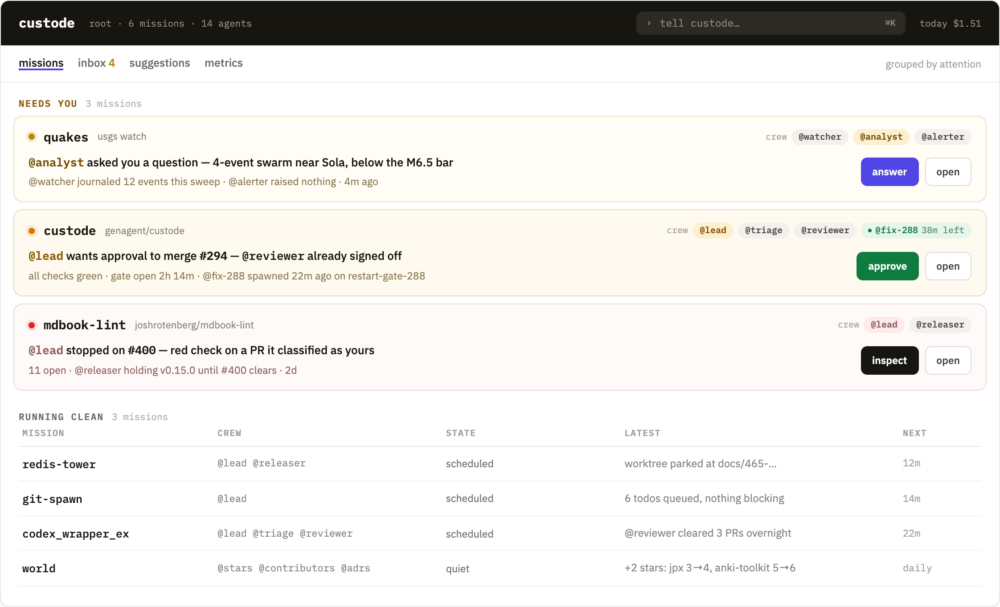
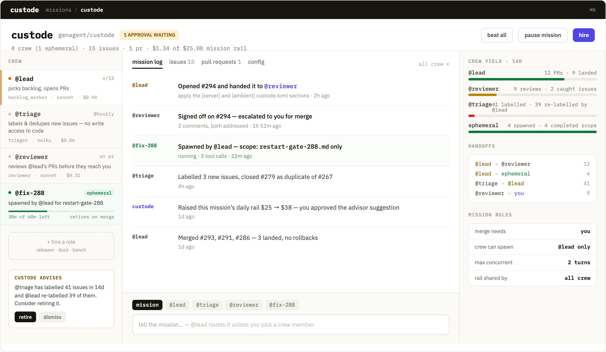
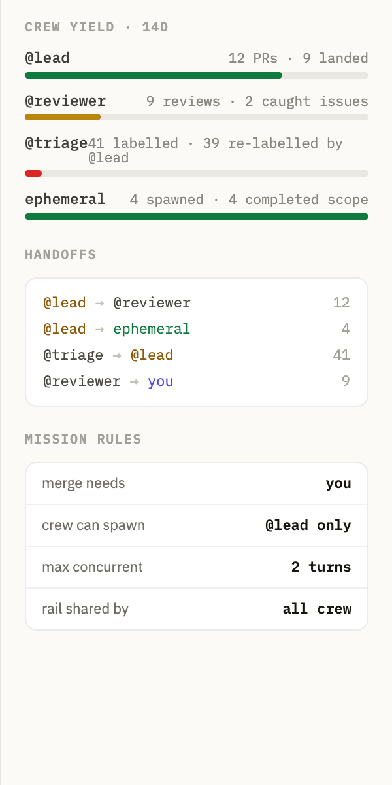
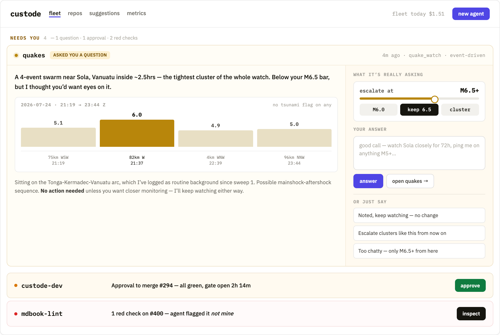
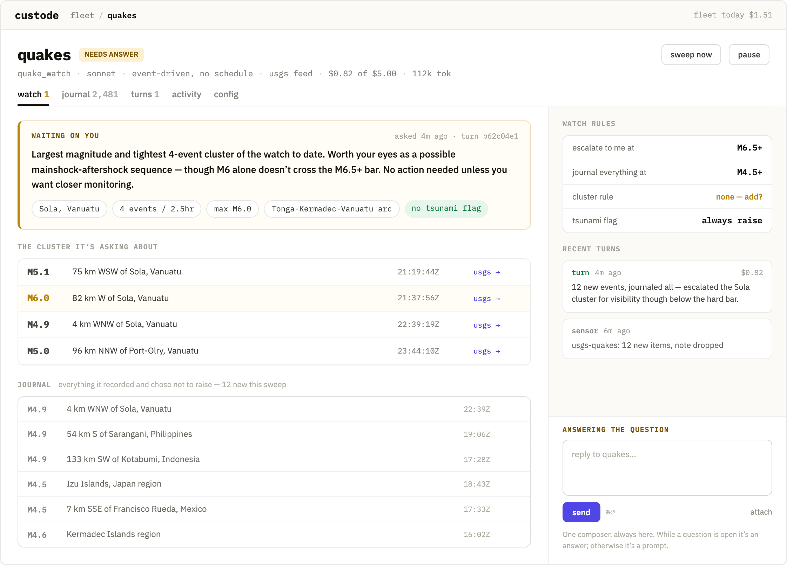
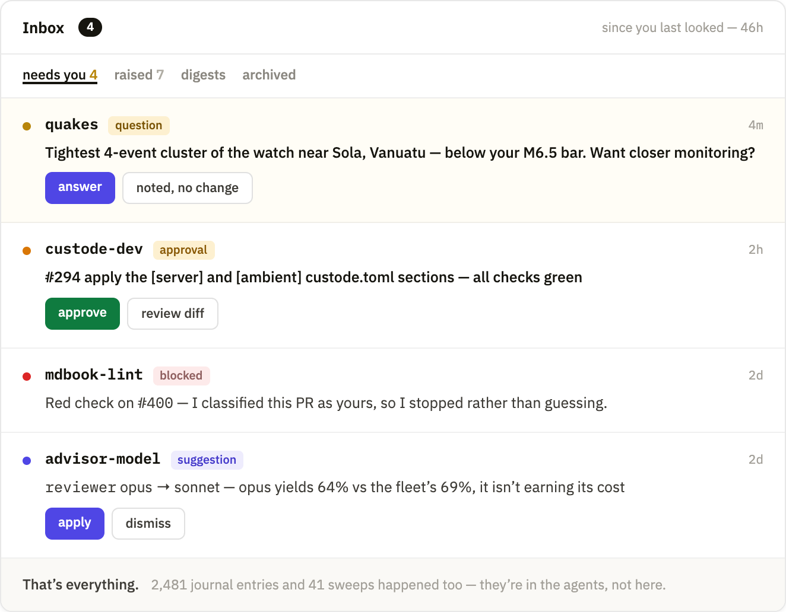
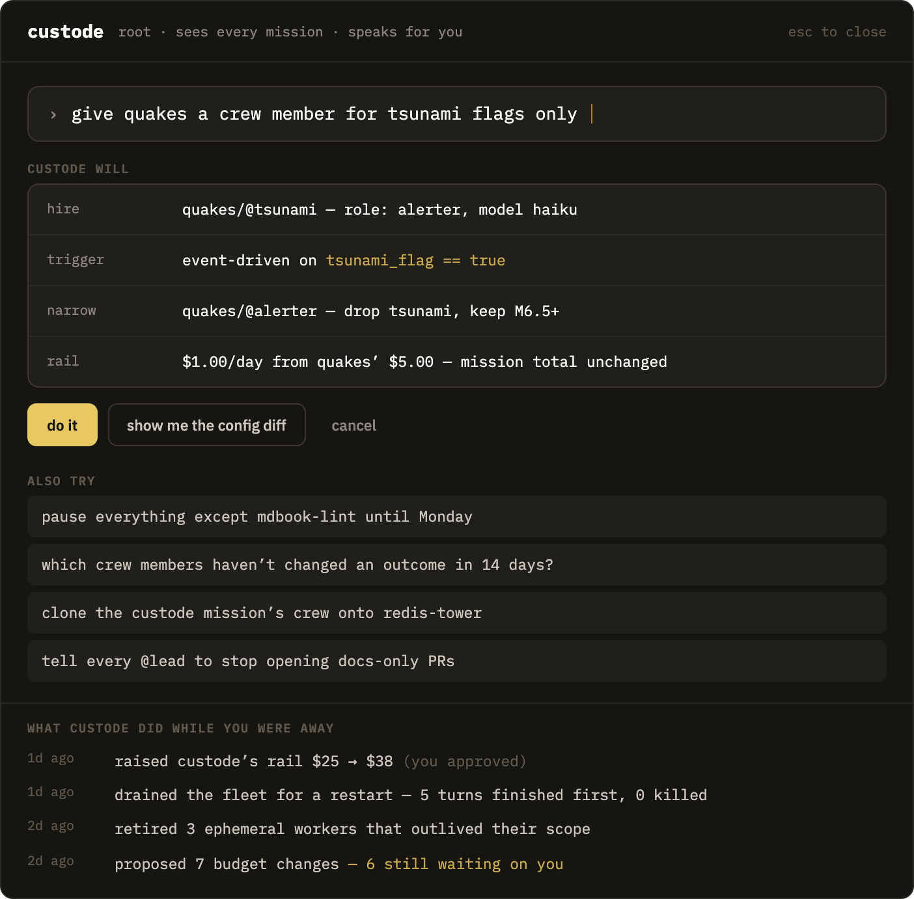
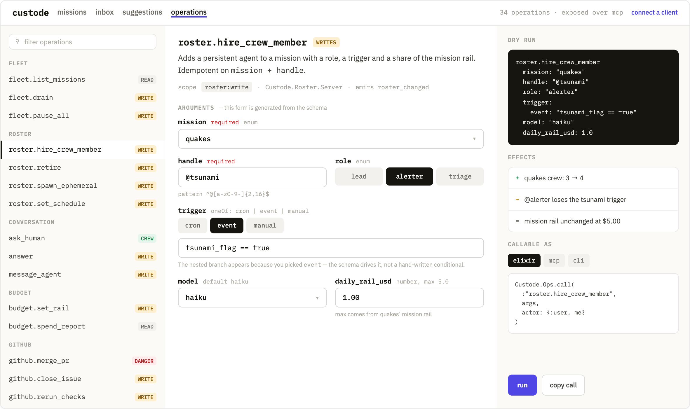
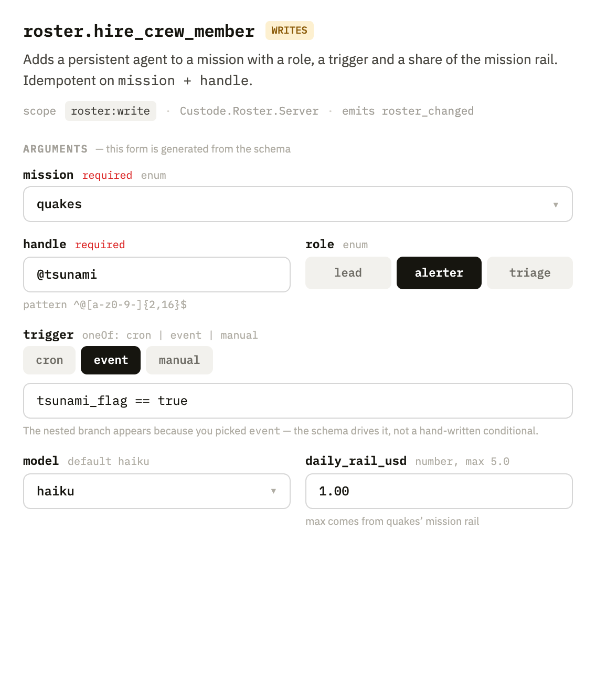
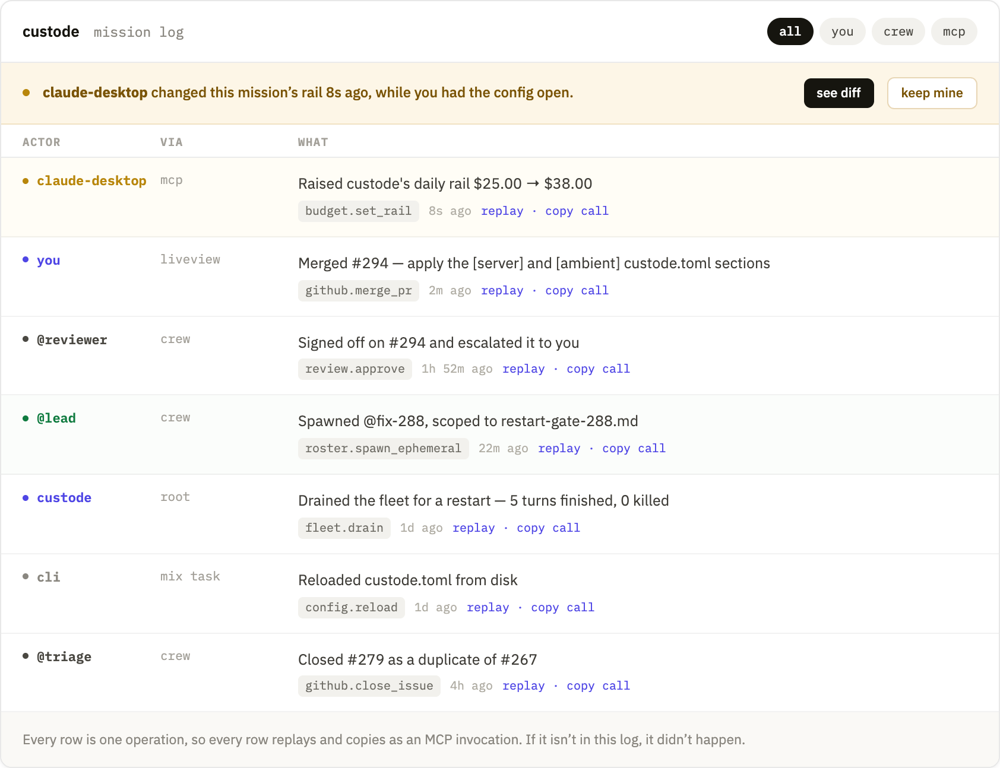
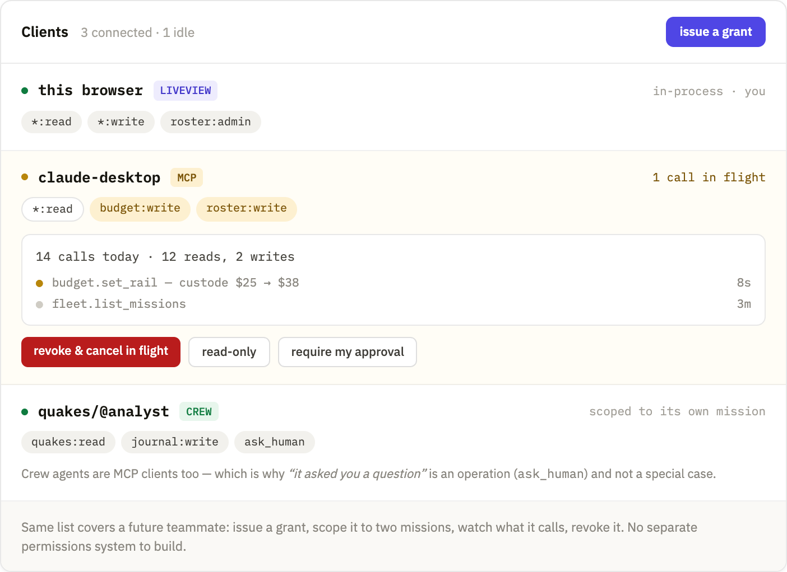
Both remain viable and both are cheaper than FIG 1. Recorded because the choice between them is about how much of a rewrite you want to absorb at once, not about which is better.
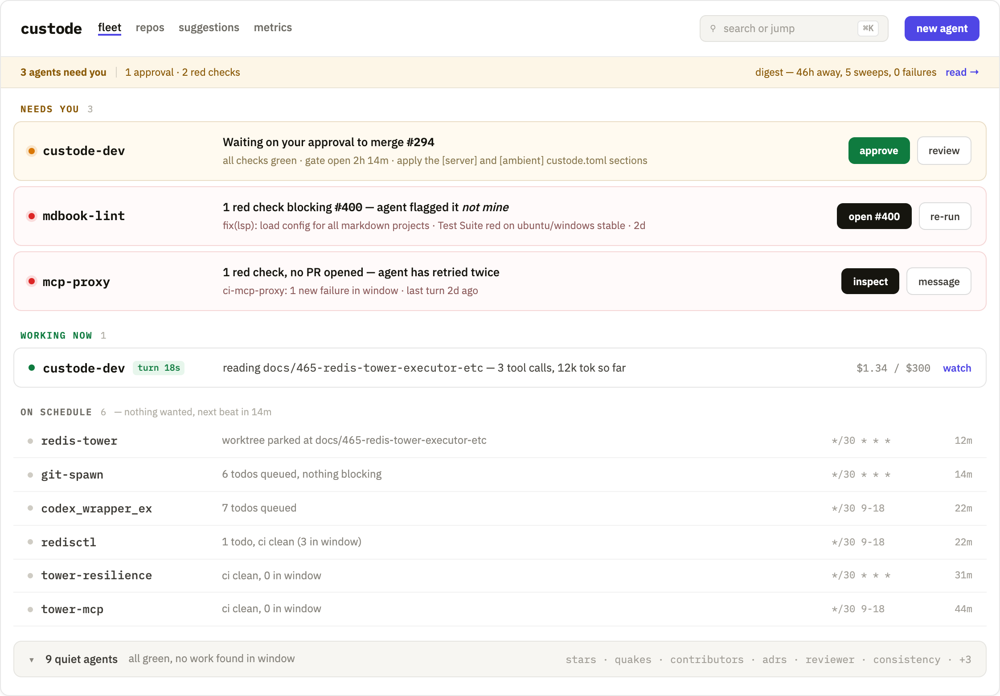
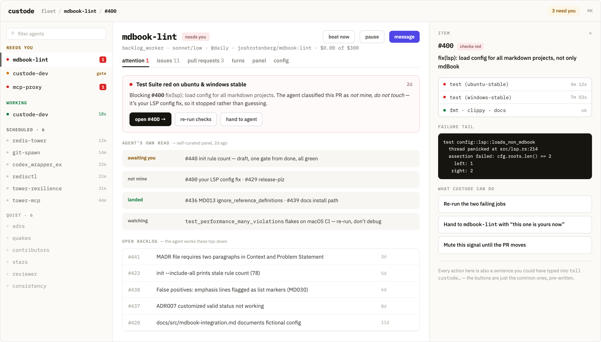
The current system keeps running throughout. Every mission is a crew of one until you say otherwise, which makes the roster change additive rather than a cutover.
| Question | Why it matters / current lean |
|---|---|
| Can a crew member serve two missions? | A shared @reviewer across repos is tempting and breaks the addressing model. Lean: no — duplicate the role per mission, and share the prompt, not the member. |
| Do crew members message each other directly? | Answered in section 5: the bus is already specified with depth and fan-out bounds, so adopt it rather than restricting to handoffs. What remains open is how conservatively to set the bounds. |
| Is the rail per mission or per member? | Both, with member rails summing within the mission rail. Needs deciding before budget.set_rail is written, since it changes the validation. |
| Can external clients spawn crew? | Powerful and the clearest runaway-cost path. Lean: roster:spawn grantable but off by default, with a fleet-wide ceiling on live ephemerals. |
| What happens to an unanswered question? | Partly answered in section 5: because a question is an open ask rather than a gate, the crew member proceeds by construction and nothing blocks. What is still open is the human side — whether an ask that stays open for days should escalate, expire, or simply age visibly in the inbox. Lean: age visibly, escalate only if the member asks again. |
| Multi-user, or single-operator with grants? | Grants get you most of the way to a second person without accounts, roles, or an org model. Lean: ship grants, defer real multi-user until someone actually needs it. |
| Is an ephemeral worker an Agent or an Instance? | The worker contract separates a profile from its live occurrences; my ephemeral crew reads like a short-lived profile, but a per-run isolated Instance may fit better. Affects addressing, FIG 1’s crew strip, and whether a spawned worker can be resumed. |
Agree section 2, then write the resolver against production data and see whether its ranking of the real fleet matches your instinct. That single test tells you more about whether this design is right than any further mockup will.